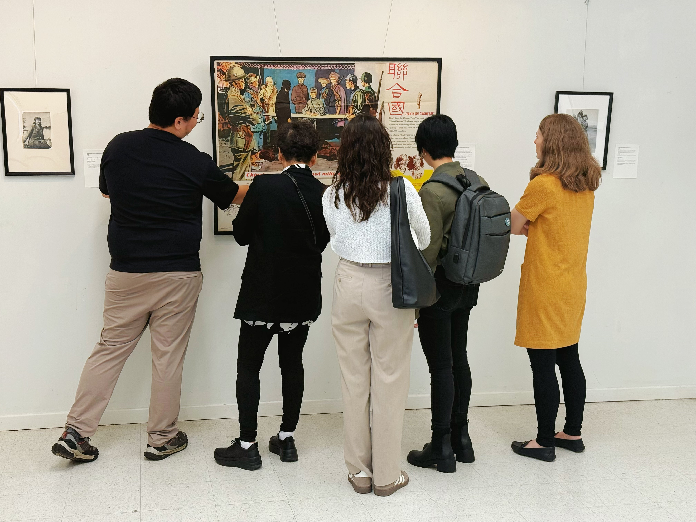

Collecting & preservation
We record where each item came from, its condition, and its materials to support research and digitization.
We care for collections, research and translate them, and share what we learn.
We record where each item came from, its condition, and its materials to support research and digitization.
We digitize photographs, documents, manuscripts, books, and objects so their records can be searched and cited.
We work with museums, archives, universities, researchers, and educators to study Far East history in a global context.
Pop-up exhibitions, classroom materials, lectures, and community programs make history open to discussion.

Museums, archives, universities, researchers, educators, community groups, and volunteers are welcome. Contact us about exhibitions, research, translation, public programs, or archival preservation.